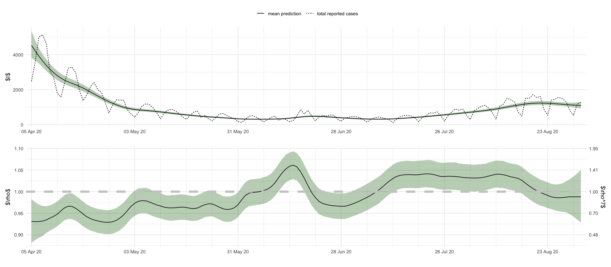
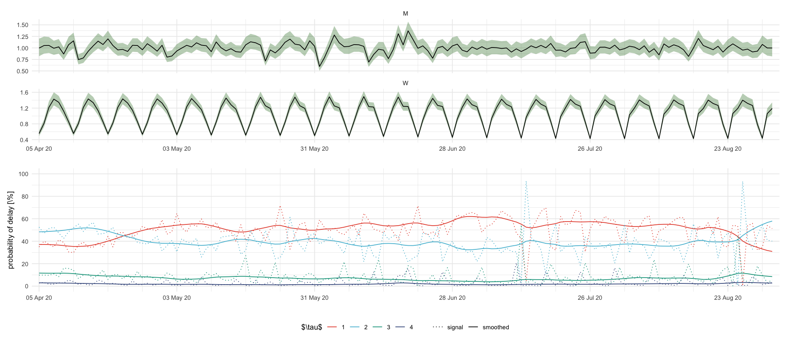
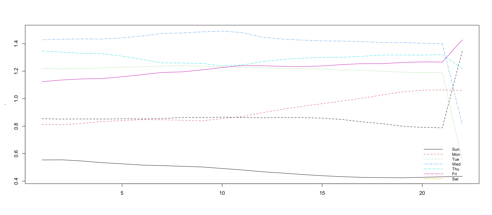
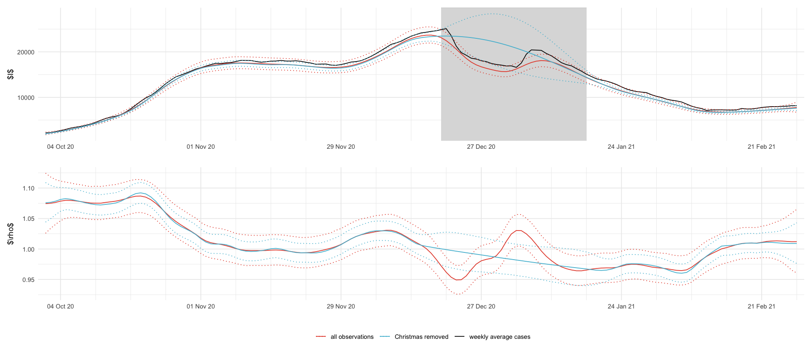
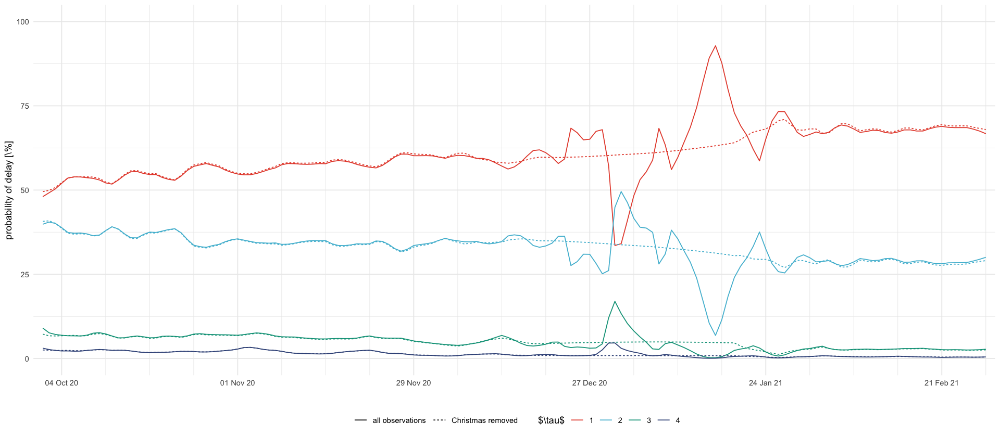

library(here)
source(here("setup.R"))here() starts at /Users/stefan/workspace/work/phd/thesis
theta_showcase <- read_csv(here("data/results/4_showcase_model/thetas.csv")) %>%
rename("\\rho" = 2)
theta_showcase
variances <- theta_showcase %>%
mutate(across(where(is.numeric), ~ exp(.x)))
sds <- variances %>%
mutate(across(where(is.numeric), ~ sqrt(.x)))
var_log_M <- variances %>%
filter(method == "MLE") %>%
pull(M)
var_M <- exp(var_log_M) - 1
sd_M <- sqrt(var_M)
c("var_M" = var_M, "sd_M" = sd_M)| method | \rho | W | q | M | W_q |
|---|---|---|---|---|---|
| <chr> | <dbl> | <dbl> | <dbl> | <dbl> | <dbl> |
| manual | -13.815511 | -4.605170 | -1.386294 | -9.210340 | -4.6051702 |
| initial | -8.422745 | -7.476381 | -4.235409 | -3.988990 | -0.4154693 |
| MLE | -8.422722 | -7.476400 | -4.225735 | -3.988944 | -0.4137567 |
tables/showcase-parameters.texdf_showcase <- read_predictions(
here("data/results/4_showcase_model/predictions.npy"),
seq(ymd("2020-04-05"), ymd("2020-09-01"), by = "1 day"),
c("I", "$\\rho$", "M", "W", "running_W", "$p^s_1$", "$p^s_2$", "$p^s_3$", "$p^s_4$", "$p_1$", "$p_2$", "$p_3$", "$p_4$", "$W_{q_1}", "W_{q_2}", "W_{q_3}")
)figures/showcase_prediction_intervals_I_rho.textotal_df <- rep_tri %>%
mutate(total = `1` + `2` + `3` + `4`) %>%
select(date = county_date, total)
plt_I <- df_showcase %>%
filter(variable == "I") %>%
ggplot(aes(date, mean)) +
geom_ribbon(aes(date, ymin = `0.025`, ymax = `0.975`), fill = "darkgreen", alpha = .3) +
geom_line(aes(linetype = "mean prediction")) +
geom_line(aes(y = total, linetype = "total reported cases"), data = filter(total_df, date <= max(df_showcase$date))) +
labs(x = "", y = "$I$", linetype = "") +
scale_x_four_weekly()
plt_rho <- df_showcase %>%
filter(variable == "$\\rho$") %>%
ggplot(aes(date, mean)) +
geom_ribbon(aes(date, ymin = `0.025`, ymax = `0.975`), fill = "darkgreen", alpha = .3) +
geom_line() +
geom_hline(yintercept = 1, linetype = "dashed", color = "grey80", size = 2) +
# geom_text(x = min(df_showcase$date), y = 1.00, label = "threshold for \n exponential growth", color = "grey80", vjust = -1, hjust = .15, size = 2) +
labs(x = "", y = "$\\rho$") +
scale_y_continuous(
sec.axis = sec_axis(~ .^7, name = "$\\rho^7$", breaks = round(c(.9, .95, 1., 1.05, 1.1, 1.15)^7, 2))
) +
scale_x_four_weekly()
plt_I / plt_rho + plot_layout(guides = "collect") & theme(legend.position = "top")
ggsave_tikz(here("tikz/showcase_prediction_intervals_I_rho.tex"), height = default_height)Warning message:
"Using `size` aesthetic for lines was deprecated in ggplot2 3.4.0.
i Please use `linewidth` instead."
figures/showcase_prediction_intervals.texplt_MW <- df_showcase %>%
filter((variable %in% c("M", "W"))) %>%
ggplot(aes(date, mean)) +
geom_ribbon(aes(date, ymin = `0.025`, ymax = `0.975`), fill = "darkgreen", alpha = .3) +
geom_line() +
facet_wrap(~variable, scales = "free_y", ncol = 1) +
labs(x = "", y = "")
plt_p <- df_showcase %>%
filter(str_starts(variable, "\\$p")) %>%
mutate(delay = str_extract(variable, "\\d+")) %>%
select(date, mean, variable, delay) %>%
mutate(variable = ifelse(str_detect(variable, "s"), "smoothed", "signal")) %>%
ggplot(aes(date, 100 * mean, color = delay, linetype = variable)) +
geom_line() +
scale_y_continuous(breaks = 20 * 0:5, limits = c(0, 1) * 100) +
scale_linetype_manual(values = c("signal" = "dotted", "smoothed" = "solid")) +
labs(color = "$\\tau$", x = "", y = "probability of delay [\\%]", linetype = "")
plt_MW / plt_p + plot_layout(guides = "collect") & theme(legend.position = "bottom") & scale_x_four_weekly()
# theme(axis.text.x = element_text(angle = 45, hjust = 1))
ggsave_tikz(here("tikz/showcase_prediction_intervals.tex"), height = 1.5 * default_height)
df_showcase %>%
filter(variable == "W") %>%
pull(mean) %>%
head(-1) %>%
matrix(nrow = 7) %>%
t() %>%
matplot(type = "l")
legend("bottomright", lty = 1:7, legend = c("Sun", "Mon", "Tue", "Wed", "Thu", "Fri", "Sat"), col = 1:7, cex = 0.8, bty = "n")Warning message in matrix(., nrow = 7):
"Datenl"ange [149] ist kein Teiler oder Vielfaches der Anzahl der Zeilen [7]"
theta_christmas <- read_csv(here("data/results/4_christmas_model/thetas.csv")) %>%
rename("\\rho" = 2)
theta_christmas_miss <- read_csv(here("data/results/4_christmas_model/thetas_miss.csv")) %>%
rename("\\rho" = 2)
sds_christmas <- theta_christmas %>%
mutate(across(where(is.numeric), ~ exp(.x / 2)))
sds_christmas_miss <- theta_christmas_miss %>%
mutate(across(where(is.numeric), ~ exp(.x / 2)))tables/christmas-parameters.tex# use scientific notation
sds_christmas %>%
mutate(model = "full") %>%
bind_rows(sds_christmas_miss %>% mutate(model = "missing")) %>%
select(-model) %>%
rename_with(function(col) str_glue("$\\hat\\sigma_{{ {col} }}$"), where(is.numeric)) %>%
kable(format = "latex", format.args = list(scipen = 2, digits = 2), booktabs = T, escape = F) %>%
pack_rows("all observations", 1, 3) %>%
pack_rows("Christmas removed", 4, 6) %>%
cat(., file = here("tables/christmas-parameters.tex"))df_christmas <- read_predictions(
here("data/results/4_christmas_model/predictions.npy"),
seq(ymd("2020-10-01"), ymd("2021-02-28"), by = "1 day"),
c("I", "$\\rho$", "M", "W", "running_W", "$p^s_1$", "$p^s_2$", "$p^s_3$", "$p^s_4$", "$p_1$", "$p_2$", "$p_3$", "$p_4$", "$W_{q_1}", "W_{q_2}", "W_{q_3}", "y_christmas")
)
df_christmas_missing <- read_predictions(
here("data/results/4_christmas_model/predictions_miss.npy"),
seq(ymd("2020-10-01"), ymd("2021-02-28"), by = "1 day"),
c("I", "$\\rho$", "M", "W", "running_W", "$p^s_1$", "$p^s_2$", "$p^s_3$", "$p^s_4$", "$p_1$", "$p_2$", "$p_3$", "$p_4$", "$W_{q_1}", "W_{q_2}", "W_{q_3}", "y_christmas")
)imputed <- df_christmas_missing %>%
filter(variable == "y_christmas") %>%
head(1) %>%
select(-date, -variable) %>%
pivot_longer(everything()) %>%
deframe()
removed <- total_df %>%
filter(date %in% dates_missing) %>%
summarize(sum(total)) %>%
pull()
f_digit <- function(x) format(round(x, -3), big.mark = ",")
str_glue("Removed {format(removed, big.mark=',')} cases")
str_glue("Imputed cases: {f_digit(imputed['mean'])} +- {f_digit(imputed['sd'])}, 95% PI {f_digit(imputed['0.025'])} - {f_digit(imputed['0.975'])} ")df_plot <- rbind(
mutate(df_christmas, model = "all observations"),
mutate(df_christmas_missing, model = "Christmas removed")
) %>%
select(model, date, variable, mean, `0.025`, `0.975`) %>%
filter(variable %in% c("I", "$\\rho$"))
total_df_smoothed <- total_df %>%
mutate(total = rollmean(total, 7, 0, True, align = "center")) %>%
filter(date %in% unique(df_plot$date)) %>%
mutate(model = "weekly average cases")
plt_I <- df_plot %>%
filter(variable == "I") %>%
ggplot(aes(date, mean, color = model)) +
geom_rect(xmin = min(dates_missing), xmax = max(dates_missing), ymin = -Inf, ymax = Inf, fill = "gray", alpha = .01, inherit.aes = F) +
geom_line(aes(date, total), data = total_df_smoothed) +
# geom_ribbon(aes(ymin = `0.025`, ymax = `0.975`, fill = model), alpha = .3) +
geom_line(aes(y = `0.025`, color = model), linetype = "dotted") +
geom_line(aes(y = `0.975`, color = model), linetype = "dotted") +
geom_line() +
labs(x = "", y = "$I$", fill = "", color = "") +
scale_color_manual(values = c("all observations" = pal_npg()(3)[1], "Christmas removed" = pal_npg()(3)[2], "weekly average cases" = "black"))
plt_rho <- df_plot %>%
filter(variable == "$\\rho$") %>%
ggplot(aes(date, mean, color = model)) +
# geom_rect(xmin = min(dates_missing), xmax = max(dates_missing), ymin = -Inf, ymax = Inf, fill = "gray80", alpha = .01, inherit.aes = F) +
# geom_ribbon(aes(ymin = `0.025`, ymax = `0.975`, fill = model), alpha = .3) +
geom_line(aes(y = `0.025`, color = model), linetype = "dotted", show.legend = F) +
geom_line(aes(y = `0.975`, color = model), linetype = "dotted", show.legend = F) +
geom_line(show.legend = F) +
labs(x = "", y = "$\\rho$", fill = "", color = "")
plt_I / plt_rho + plot_layout(guides = "collect") & theme(legend.position = "bottom") & scale_x_four_weekly()
ggsave_tikz(here("tikz/christmas_prediction_intervals_I_rho.tex"))
tikz/christmas_delay_probs.texdf_plot <- rbind(
mutate(df_christmas, model = "all observations"),
mutate(df_christmas_missing, model = "Christmas removed")
) %>%
select(model, date, variable, mean, `0.025`, `0.975`) %>%
filter(str_starts(variable, "\\$p\\^s")) %>%
mutate(delay = str_extract(variable, "\\d+")) %>%
select(-variable)
df_plot %>%
ggplot(aes(date, 100 * mean, color = delay, linetype = model)) +
geom_line() +
ylim(0, 100) +
scale_x_four_weekly() +
labs(x = "", y = "probability of delay [\\%]", color = "$\\tau$", linetype = "") +
theme(legend.position = "bottom")
ggsave_tikz(here("tikz/christmas_delay_probs.tex"), height = 1 / 2 * default_height)